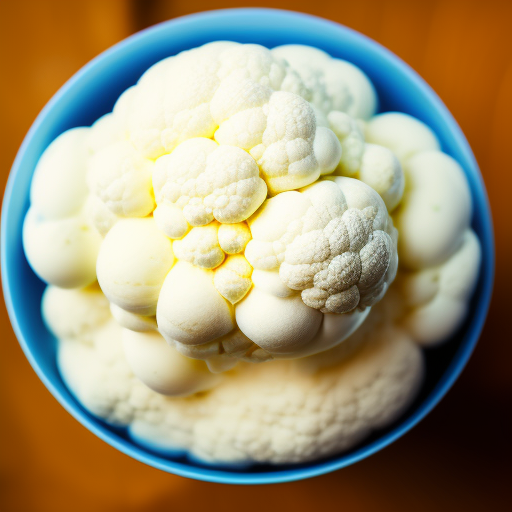

Quirky Cauliflower Ice Cream

Description
Prepare to challenge your taste buds and redefine culinary norms with this eccentric creation: "Quirky Cauliflower Ice Cream." This dessert is a delightful twist that blurs the line between sweet and savory, creating a culinary experience that's both bewildering and oddly satisfying.
Ingredients
- 1 head of cauliflower (because why not?)
- 1 cup of sugar (for a touch of sweetness)
- 2 cups of heavy cream (because ice cream demands indulgence)
- A pinch of salt (to keep things balanced)
- Optional toppings: rainbow sprinkles, bacon bits, and gummy bears (because why stop at quirky?)
Instructions
- Begin by scratching your head as you contemplate the audacity of turning cauliflower into ice cream. Is this a culinary experiment or a prank? You decide.
- Steam or boil the cauliflower until it's tender enough to mash. While mashing, reflect on life's quirks and the ever-baffling world of food trends.
- Mix in the sugar, causing an identity crisis for the cauliflower as it transitions from veggie to dessert. Think of it as the Jekyll and Hyde of your kitchen.
- Whip the heavy cream until it forms soft peaks, whispering words of encouragement as you contemplate the peculiar path your dessert is taking.
- Gently fold the whipped cream into the cauliflower mixture, watching as the two unlikely companions combine forces. It's like a buddy cop movie, but in your mixing bowl.
- Add a pinch of salt, making sure your dessert maintains an air of sophistication despite its quirkiness. It's all about balance, after all.
- Pour the concoction into an ice cream maker, watching with a mixture of amusement and curiosity as it transforms into a frozen treat. Scooping it might be like solving a Rubik's Cube; a rewarding challenge.
- Serve your quirky creation with a flourish, and invite guests to add their choice of toppings. Rainbow sprinkles, bacon bits, and gummy bears create a visual spectacle that matches the absurdity of the dessert itself.
- Watch as your brave tasters take their first bites. Their faces might contort with confusion before breaking into smiles. Is it cauliflower? Is it ice cream? Who cares, it's oddly intriguing!
- Engage in a post-dessert discussion about life's paradoxes and the beauty of embracing the unexpected. Philosophical musings go best with quirky desserts, after all.